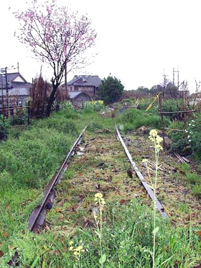
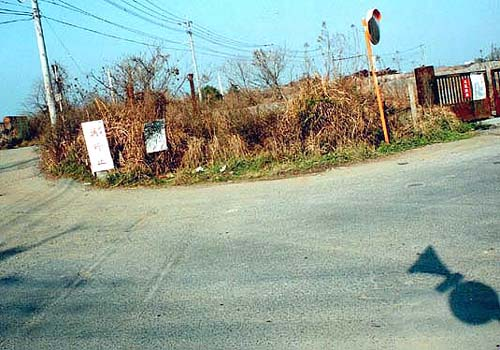
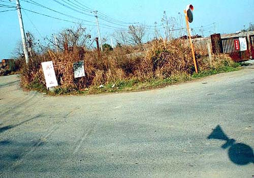

三井三池事業所鉄道課 四ツ山駅（提供写真）  荒尾市四山町 四ツ山神社入口付近 引込み線跡（2003年3月撮影）  旧四山鉱へ至る引込み線跡。レール跡2本が道路に残る（2001年3月撮影）
荒尾市四山町 四ツ山神社入口付近 引込み線跡（2003年3月撮影）  旧四山鉱へ至る引込み線跡。レール跡2本が道路に残る（2001年3月撮影）
旧四山鉱へ至る引込み線跡。レール跡2本が道路に残る（2001年3月撮影）